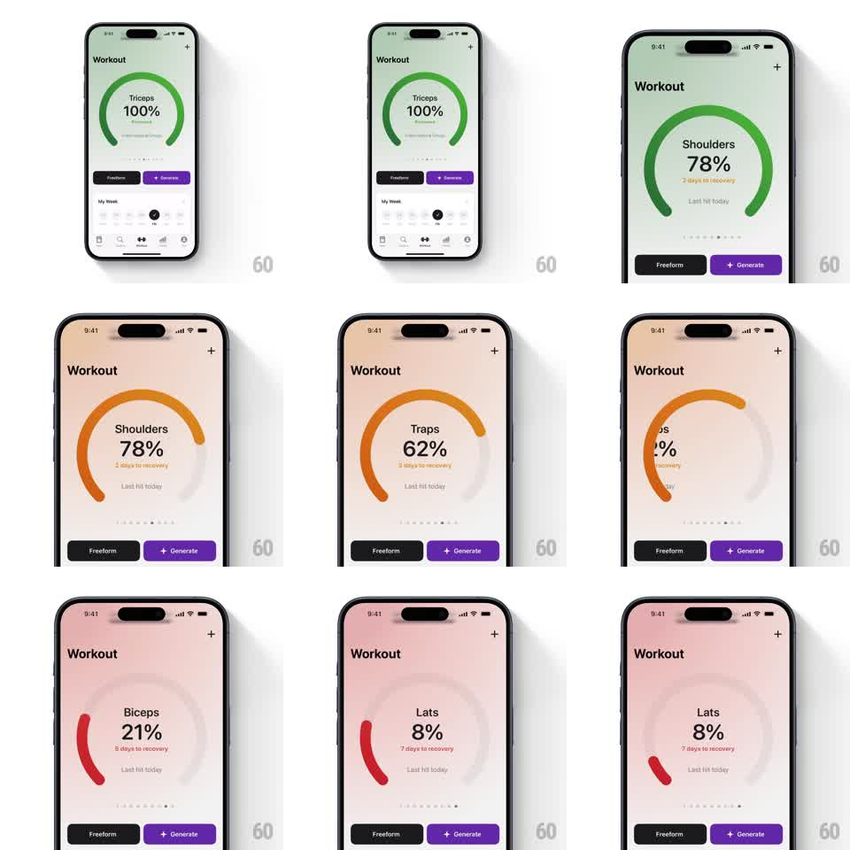

Media
Frame-by-frame

Rebuild this animation 1:1: Train's muscle recovery carousel - swiping horizontally pages through muscle groups, each rendering a large circular recovery ring that draws to its percentage with a color-coded arc (green recovered to red fatigued) while the screen's background tint shifts to match.

Rebuild this animation 1:1: Train's muscle recovery carousel - swiping horizontally pages through muscle groups, each rendering a large circular recovery ring that draws to its percentage with a color-coded arc (green recovered to red fatigued) while the screen's background tint shifts to match.
## Integration
Integration: stack-agnostic spec - springs given as stiffness/damping, timed motions as duration + curve; map every value to your framework and animation library of choice.
## Scene
"Workout" screen: large ring gauge center-upper area showing muscle name ("Shoulders"), big percentage ("78%"), "days to recovery" line and "Last hit today" beneath; page dots below the ring; fixed bottom buttons "Freeform" and "+ Generate". Pages shown: Triceps 100% (green), Shoulders 78% (green), Traps 62% (orange), Biceps 21% (red), Lats 8% (red).
## Motion spec
Pattern: swipe carousel with drawing ring + ambient color sync.
- Swipe: page tracks finger 1:1; release snaps to nearest muscle page (spring ~280/26, ~300ms).
- On each page settle: the ring's arc redraws from 0 to its value (clockwise from top, ~500ms, ease-out), the % counter ticks up with it.
- Arc color interpolates with value (red < 40% < orange < 80% <= green); background gradient tint crossfades to the same hue family (~400ms) as the page settles.
- Page dots update with drag progress, active dot emphasized.
## Calibration
- Ring redraw happens on every page arrival, even re-visits.
- Background tint is a soft wash (10-15% saturation) of the arc color - never full-strength.
## Reduced motion
Ring fills without the draw animation; background tint swaps instantly.
## Don't miss
- The arc always draws from the 12 o'clock position.
- Muscle name, % and recovery line swap as a block per page - they do not animate independently.